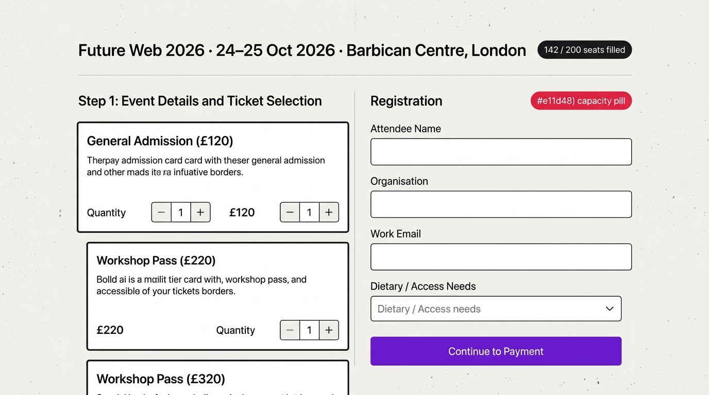
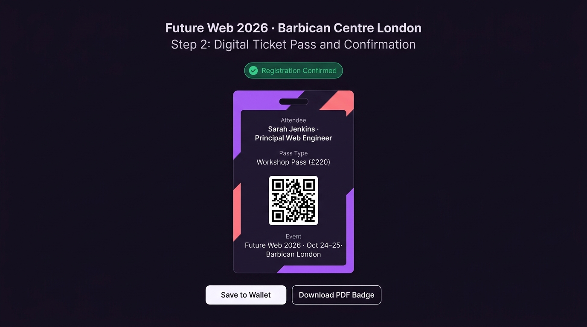
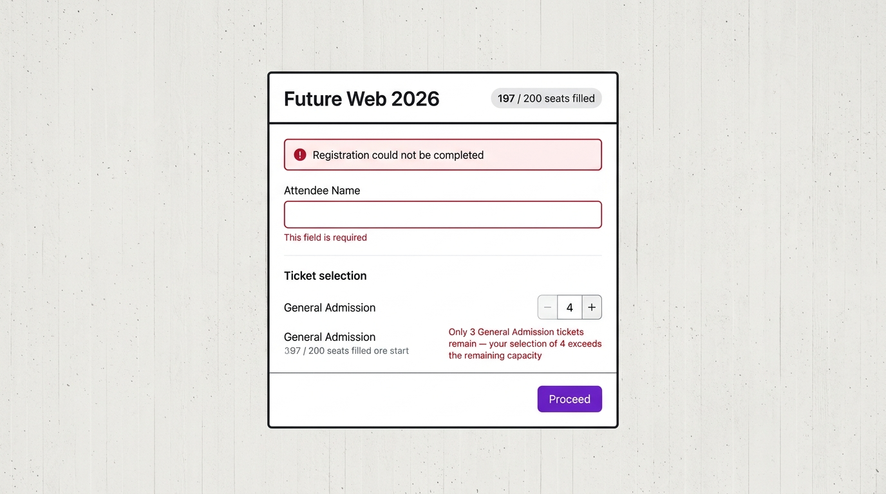

Event and ticket selection
Board 1 depicts the event banner, two priced tiers, four attendee fields and a payment CTA; the live view is a design preview only.

../step1-event.jpg · SHA-256 d9553a3f1b67… · open board 1.The two original Wave 2 boards, unmodified, sit beside independently rendered interactive HTML views. Try the quantity steppers or form in the first iframe and the Edit details control in the second.
Illustrative event, venue, capacity, tiers, prices and pass only. The boards are not generated-site captures or evidence of a purchase. Nothing here reserves a seat, charges money, issues a valid QR/ticket, saves a Wallet pass or enters the training or sealed evaluation corpora. Read board provenance and demo boundaries.
Board 1 depicts the event banner, two priced tiers, four attendee fields and a payment CTA; the live view is a design preview only.

../step1-event.jpg · SHA-256 d9553a3f1b67… · open board 1.Board 2 depicts a confirmed registration and QR graphic. The live variant is explicitly invalid for entry and emits no token.

../step2-pass.jpg · SHA-256 16e7dc0f62b9… · open board 2. Do not scan the depicted QR.Board 3 (added by mwg-train-wkto): the contract's refusal states - an omitted required field and a ticket selection exceeding remaining capacity, both announced in bound text (plan.md:34, tr-07, fam-r02). A state of the form, not a document.

../step3-refusal.jpg · SHA-256 26fe1717f72a… · open board 3.board-states.json registers the board as an interaction with no path, so the parity comparator deliberately compares nothing against it by path.